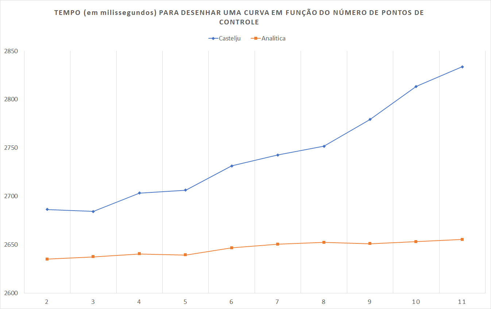

As curvas de Bézier recebem este nome devido a Pierre Bézier, engenheiro da montadora Renault, que, na década de 1960, desenvolveu uma curva intuitiva e prática, para que desiners e artistas pudessem utiliza-las sem necessidade de conhecimentos avançados em Matemática.
As curvas de Bézier podem oferecer aproximações muito boas para diversas curvas ou funções, dependendo da quantidade de pontos de controle que passemos.
Agora apresentaremos parte do ferramental matemático que está por traz das curvas de Bézier.
Assim, defini-se o \(j\)-ésimo polinômio de Bernstein de grau \(n\) como: \[ \mathbb{\beta_{\space j , \space n}} = \space {n \choose j} \space t^j \space (1-t)^{n-j} \]
Caso \(P(x)\) seja um polinômio de grau menor ou igual a \(n\), poderemos representa-lo por:
\[ P(x) = \sum_{j=0}^{n} \space f_j \space {n \choose j} \space t^j \space (1-t)^{n-j} = \sum_{j=0}^{n} f_j \space \mathbb{\beta_{\space j , \space n}}\]já que \(\{\mathbb{\beta_{\space j , \space n}}\}_{j=0}^n\) nos fornece uma base para o espaço vetorial dos polinômios de grau menor ou igual que \( n \).
Restringindo nosso \( t \) ao intervalo \( [0,1] \), a equação de uma curva de Bézier de grau n é
\[ B_n(t) = \sum_{j=0}^{n} \space P_j \space {n \choose j} \space t^j \space (1-t)^{n-j} = \sum_{j=0}^{n} \space P_j \space \mathbb{\beta_{\space j , \space n}} \]onde \(P_i\) representa o i-ésimo ponto de controle. São a partir dos pontos de controle que obtemos a curva e, para uma curva de Bézier de grau k, devemos ter k+1 pontos de controle.
A seguir representamos a forma analítica de curvas de Bezier, sejam \(P_1,P_2,P_3,P_4,P_5\) , pontos quaisquers, diferentes dois a dois.
Bézier de grau 1: \( B_n(t) = (1-t) \space P_1 + t \space P_2 \)
Bézier de grau 2: \( B_n(t) = (1-t)^2 \space P_1 + 2 \space (1-t) \cdot t \space P_2 + t^2 \space P_3 \)
Bézier de grau 3: \( B_n(t) = (1-t)^3 \space P_1 + 3 \space (1-t)^2 \space t \space P_2 + 3 \space (1-t) \space t^2 \space P_3 + t^3 \space P_4 \)
Bézier de grau 4: \( B_n(t) = (1-t)^4 \space P_1 + 4 \space (1-t)^3 \space t \space P_2 + 6 \space (1-t)^2 \space t^2 \space P_3 + 4 \space (1-t) \space t^3 \space P_4 + t^4 \space P_5\)
Abaixo pode-se desenhar uma Bézier escolhendo os pontos de controle e esta será determinada analíticamente.
O algoritmo de Castelju, foi desenvolvido pelo matemático Paul Castelju, por volta de 1959, enquanto trabalhava na Citroen. É um algoritmo recursivo, que permite construir uma curva de Bézier de grau \(k-1\) a partir de duas de grau \(k\), \(k\ge2\).
Para entender como o algoritmo constroe a curva, suponhamos que tenhamos passado 2 pontos de controle (\(P_0^0\) e \(P_1^0\)), assim a equação temos que:
\[P_0^1 = B_1(t) = (1-t) \space P_0^0 + t \space P_1^0 \space \space \space \space \space \space \space \space \space \space \space \space \space \space \space \space \space \space \space \space (1)\]Agora assuma que coloquemos mais um ponto de controle, \(P_2^0\) e, criemos o ponto \(P_1^1\) que é a interpolação linear de \(P_1^0\) e \(P_2^0\), além de um \(P_0^2\) que seia interpolação de \(P_0^1\) e \(P_1^1\), ou seja,
\[P_1^1 = B_1(t) = (1-t) \space P_1^0 + t \space P_2^0 \space \space \space \space \space \space \space \space \space \space \space \space \space \space \space \space \space \space \space \space (2)\] \[P_0^2 = B_1(t) = (1-t) \space P_0^1 + t \space P_1^1 \space \space \space \space \space \space \space \space \space \space \space \space \space \space \space \space \space \space \space \space (3)\]Como podemos ver, se substituirmos \((1)\) e \((2)\) em \((3)\) teremos uma Bézier de grau 2:
\[P_0^2 = B_2(t) = (1-t) \space [\space (1-t) \space P_0^0 + t \space P_1^0 \space] + t \space [\space(1-t) \space P_1^0 + t \space P_2^0 \space] \] \[ \space \space \space \space \space \space \space \space \space \space = \space (1-t)^2 \space P_0^0 + 2 \space (1-t) \space t \space P_1^0 + t^2 \space P_2^0 \space \space \space \space \space \space \space \space \space \space (4)\]Se criarmos um quarto ponto de controle (\(P_3^0\)), podemos definir \(P_2^1\) como interpolação linear de \(P_2^0\) e \(P_3^0\), \(P_1^2\) também como interpolação linear de \(P_1^1\) e \(P_2^1\), por fim definimos \(P_0^3\) que será formado a partir de \(P_0^2\) e \(P_1^2\), isto é,
\[P_2^1 = B_1(t) = (1-t) \space P_2^0 + t \space P_3^0 \space \space \space \space \space \space \space \space \space \space \space \space \space \space \space \space \space \space \space \space (5)\] \[P_1^2 = B_1(t) = (1-t) \space P_1^1 + t \space P_2^1 \space \space \space \space \space \space \space \space \space \space \space \space \space \space \space \space \space \space \space \space (6)\] \[P_0^3 = B_1(t) = (1-t) \space P_0^2 + t \space P_1^2 \space \space \space \space \space \space \space \space \space \space \space \space \space \space \space \space \space \space \space \space (7)\]Substituindo \((2)\) e \((5)\) em \(6\)
\[P_1^2 = B_2(t) = (1-t) \space [\space (1-t) \space P_1^0 + t \space P_2^0 \space ]+ t \space [ \space(1-t) \space P_2^0 + t \space P_3^0 \space]\] \[\space \space \space \space \space \space \space \space \space \space = \space (1-t)^2 \space P_1^0 + 2 \space (1-t) \space t \space P_2^0 + t^2 \space P_3^0 \space \space \space \space \space \space \space \space \space \space (8)\]Substituindo \((4)\) e \((8)\) em \((7)\) teremos uma Bézier de grau 3:
\[P_0^3 = B_3(t) = (1-t) \space [\space (1-t)^2 \space P_0^0 + 2 \space (1-t) \space t \space P_1^0 + t^2 \space P_2^0 \space ]+ t \space [ \space (1-t)^2 \space P_1^0 + 2 \space (1-t) \space t \space P_2^0 + t^2 \space P_3^0 \space] \] \[\space \space \space \space \space \space \space \space \space \space = \space (1-t)^3 \space P_0^0 + 3 \space (1-t)^2 \space t \space P_1^0 + 3 \space (1-t) \space t^2 \space P_2^0 + t^3 \space P_3^0 \space \space \space \space \space \space \space \space \space \space (9)\]De um modo geral, dado uma Bézier de grau n, podemos escrever o ponto \(P_i^j\), onde \(j=1, . . . ,n\) e\(i=1,...,n-j\), como:
\[P_i^j=(1-t) \space P_i^{j-1} + t \space P_{i+1}^{j-1}\]onde t pertence ao intervalo [0,1].
Vale ressaltar que o algoritmo de Castelju nos fornece uma estabilidade númerica maior que o método anterior.
A seguir segue-se um espaço para construir curvas de Bézier passando-se os pontos de controle, com base no algoritmo de Casteljau.
Abaixo estamos implementando o algoritmo de Castelju que constroi uma curva através da divisão de uma curva de Bézier recursivamente, para tanto, fixamos \(t=1/2\) e calculamos o ponto da curva, logo após isso temos duas curvas, uma formada pelo ponto de controle inicial e este ponto que acabamos de encontrar e, este último com o ponto de controle final, assim, calculamos os pontos da curva de Bézier principal dada pelas duas geradas fazendo \(t=1/2\) e, se desejarmos, aplicamos a recursão novamente.
Testamos o tempo que os dois algoritmos (analítico e o de Castelju, a primeira versão) demoram para desenhar uma curva em função do número de pontos de controle.

Como pode ser observado acima enquanto o analítico cresce de forma praticamente linear, o Castelju cresce lembrando uma forma quadrática. Assim, quando se necessita de velocidade e o número de pontos de controle é grande, o algoritmo de Castelju deixa a desejar. Da forma recursiva como implementamos ele, quando é dado 22 ou 23 pontos de controle, atingimos o limite máximo de recursão que é suportado. Já a analítica consegue suportar até 160 pontos de controle.
Futuros trabalhos podem ser melhorar o algoritmo de Castelju para que ele consiga suportar um número maior de recursões. E, realizar mais amostragem, testando uma quantidade maior de pontos de controle, para determinar de forma mais precisa o tempo que cada método demora para desenhar a curva em função da quantidade de pontos de controle.
[1] Sederberg, Thomas W., "Computer Aided Geometric Design" (2012).All Faculty Publications. 1. https://scholarsarchive.byu.edu/facpub/1
[2] MEDEIROS, Heloisa B.; MENEZES, M. Lucia. Aproximação de funções: polinômios de Bernstein. 20 jun. 2011. Disponível em: http://klein.sbm.org.br/wp-content/uploads/sites/17/2016/02/Aproximac%CC%A7a%CC%83o-de-Func%CC%A7o%CC%83es.pdf. Acesso em: 31 out. 2019.
[3] HAN, Xi-An; MA, YiChen; HUANG, XiLi. The cubic trigonometric Bézier curve with two shape parameters. Applied Mathematics Letters, [s. l.], v. 22, ed. 2, p. 226-231, Fevereiro 2009. Disponível em: https://doi.org/10.1016/j.aml.2008.03.015. Acesso em: 31 out. 2019.
[4] BUCKLER, Craig. How to Translate from DOM to SVG Coordinates and Back Again. [S. l.], 31 ago. 2016. Disponível em: https://www.sitepoint.com/how-to-translate-from-dom-to-svg-coordinates-and-back-again/ . Acesso em: 31 out. 2019.
[5] COLLINGRIDGE, Peter. Interactive SVGs: Draggable SVG elements. [S. l.], 3 abr. 2018. Disponível em: http://www.petercollingridge.co.uk/tutorials/svg/interactive/dragging/ . Acesso em: 31 out. 2019.
[6] MOVER objetos SVG. Stack Overflow, 11 mar. 2015. Disponível em: https://pt.stackoverflow.com/questions/53908/mover-objetos-svg. Acesso em: 31 out. 2019.
[7] MOVER objetos SVG gráfico. Stack Overflow, 26 nov. 2014. Disponível em: https://pt.stackoverflow.com/questions/40720/mover-objetos-svg-gráfico . Acesso em: 31 out. 2019.